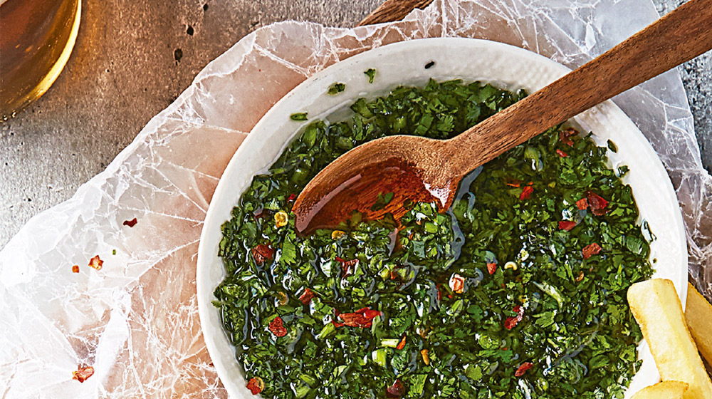

Chimichurri

Description
Chimichurri is an uncooked sauce used for grilled meat;
it originated in Argentina and Uruguay. The dominant flavors are parsley and garlic.
Ingredients
- ¼ cup hot water
- 2 tablespoons dried oregano
- 1 teaspoon salt
- 1 cup chopped fresh parsley, or more to taste
- ⅔ cup chopped fresh cilantro
- 6 cloves garlic
- 1 shallot, roughly chopped
- 1 red jalapeno pepper, chopped
- ½ cup red wine vinegar
- ¾ cup extra virgin olive oil
Steps
- Combine water, oregano, and salt in a small bowl and set aside until oregano has softened, about 15 minutes.
- Combine parsley, cilantro, garlic, shallot, and jalapeno in the bowl of a food processor; pulse until chopped.
Add water-oregano mixture and red wine vinegar and pulse until finely chopped. Transfer to a bowl and whisk in
olive oil until emulsified.
- Cover chimichurri sauce and let sit at room temperature until flavors have melded, about 1 hour.